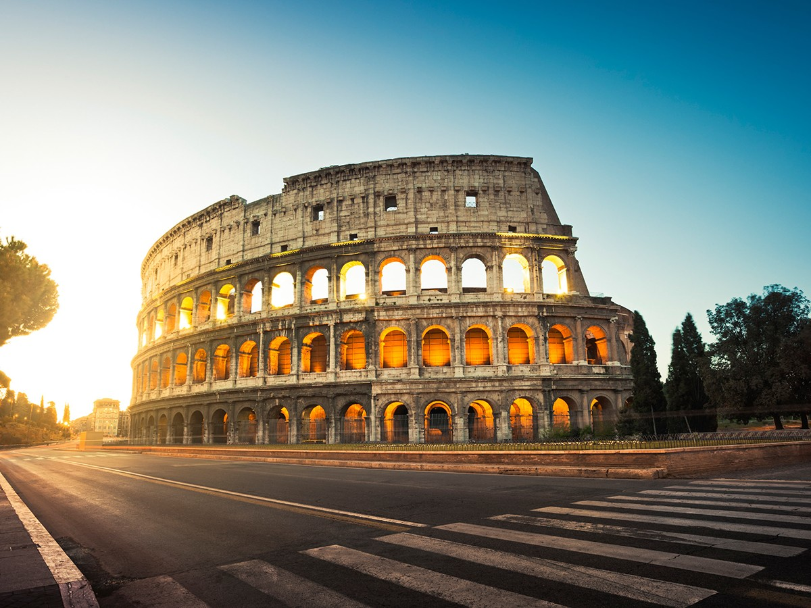
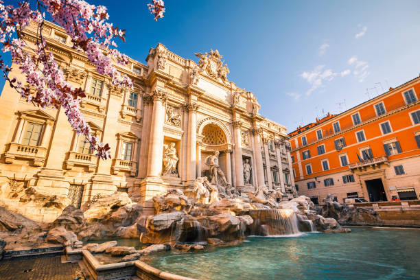
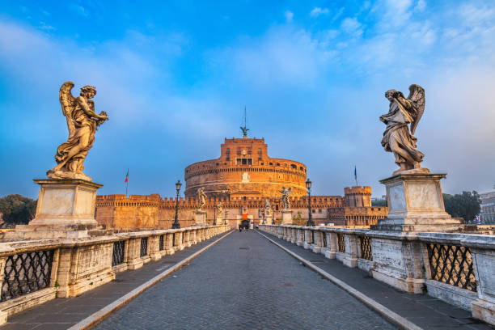
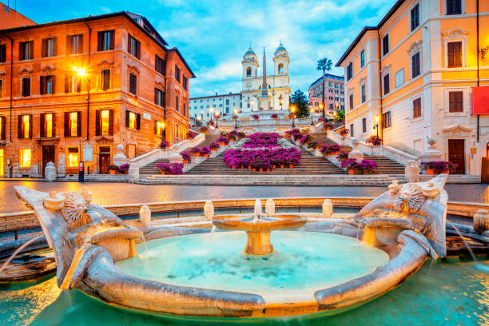

Рим - История и култура
Вид транспорт: Самолет ✈️
Продължителност: 4 дни / 3 нощувки
Дестинация: Рим, Италия
Дата на отпътуване: 20.02.2025
Програма на пътуването
- Ден 1: Полет от София до Рим. Пристигане, трансфер до хотела и свободно време за разходки в централната част на града. Вечеря в традиционен италиански ресторант.
- Ден 2: Целодневна обиколка на основните забележителности на Рим: Колизеумът, Римският форум и Пантеонът. Следобед разходка по улица "Виа дел Корсо" за пазаруване.
- Ден 3: Посещение на Ватикана: базиликата "Св. Петър" и Сикстинската капела. След това свободно време за разходки из Ватиканските градини и околните улици.
- Ден 4: Разходка из историческия център: посещение на Фонтана Ди Треви, Площад Испания и Пантеона. Следобед: свободно време за посещение на музеите или местни галерии.
- Ден 5: Разходка из квартала Трастевере с обяд в традиционен римски ресторант. Следобед свободно време за последни покупки или посещение на някоя от малките църкви в Рим. Трансфер до летището и полет обратно до София.
Полезна информация
- Необходими документи: валиден паспорт или лична карта.
- Депозит: 30% от сумата при резервация.
- Доплащане: най-късно 15 дни преди отпътуване.
- Местна валута: евро (EUR).
- Часова разлика: Рим е на 1 час зад София.
- Езици: Официален език - италиански. Английски се говори на много места в Рим.
- Времето: Средната температура през зимата е около 10°C, през лятото около 25°C.
Галерия



×